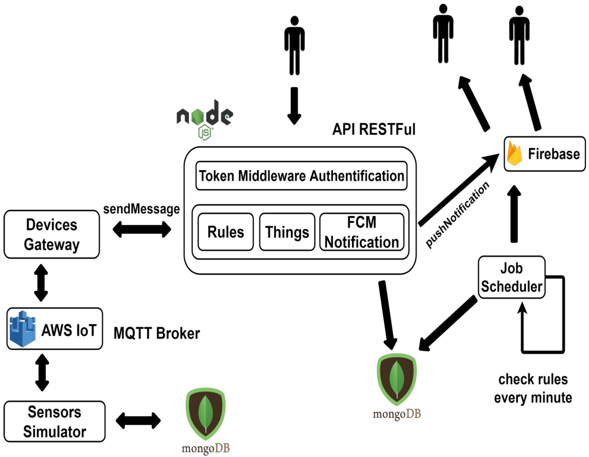
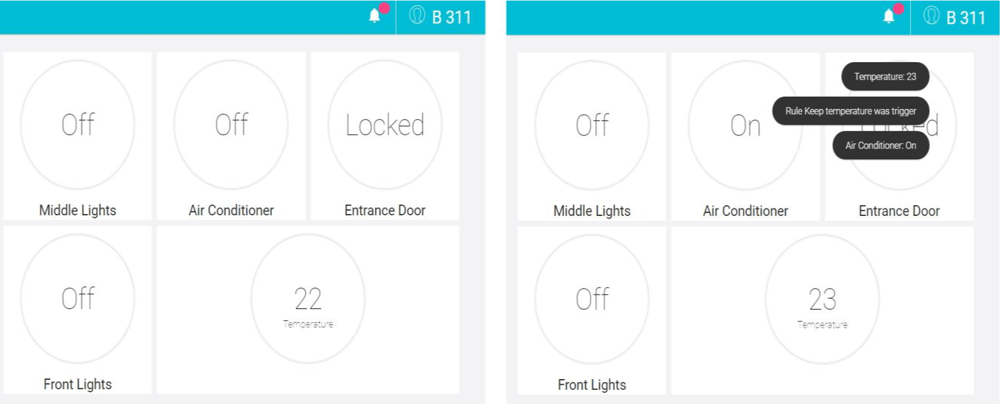
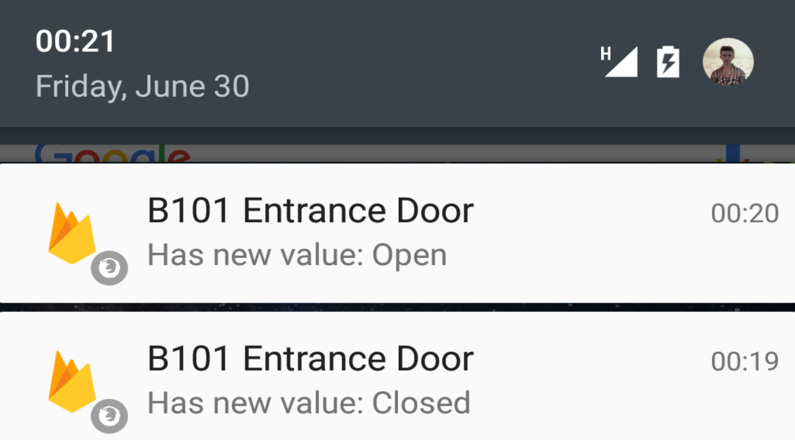

Data publicării: 29.08.2017
Autor articol: Sabin Buraga
Introducere
Acest articol descrie o soluție software privind managementul dispozitivelor interconectate – IoT (Internet of Things). Termenul IoT se referă la toate obiectele (entitățile) conectate la Internet, însă este folosit din ce în ce mai des pentru a defini dispozitive care interacționează între ele. Combinarea acestor dispozitive cu sisteme automate conduce la colectarea de date, analizarea lor și realizarea unor acțiuni de interes cu scopul de a automatiza sarcini sau pentru a procesa cunoștințe (Guinard & Trifa, 2016).
Platforma dezvoltată vine în ajutorul utilizatorilor facilitând interacțiunea dintre aceștia și senzori/actuatori, oferind în același timp o soluție pentru problema interacțiunii între dispozitive. Comunicarea între dispozitivele fizice și platformă se realizează prin intermediul protocolului de comunicare MQTT (Banks & Gupta, 2014) ce respectă modelul publish-subscribe. Entitățile care se abonează pentru a primi mesaje (subscribers) au posibilitatea de a-și exprima interesul pentru un eveniment sau o serie de evenimente, iar ulterior sunt notificate despre oricărui eveniment care corespunde interesului lor, eveniment generat de un emițător (publisher). Un eveniment este propagat asincron către toți cei care prezintă un interes pentru acest eveniment. În cadrul acestui model, cei care emit mesaje (publishers) nu specifică un anumit destinatar (subscribers), dar în schimb se publică mesaje fără a ști cine s-a abonat pentru a le primi. Similar, receptorii primesc mesajele de care sunt interesați fără a cunoaște cine le-a publicat.
În cadrul sistemului dezvoltat, utilizatorii pot fi notificați în legătură cu modificările survenite în sistem chiar și în momentul în care nu interacționează cu platforma. Automatizarea acțiunilor unui utilizator se realizează prin intermediul unui sistem bazat pe reguli.
Aplicația a fost realizată prin intermediul unui API REST dezvoltat folosind Express, un framework bazat pe Node.js pentru dezvoltarea de aplicații pe partea de server. Pentru notificarea utilizatorilor s-a folosit serviciul de Push Notification pus la dispoziție de Google Firebase – FCM (Firebase Cloud Messaging). Pe partea de client (front-end) au fost utilizate framework-urile Angular și Materialize. Deoarece datele furnizate de dispozitive nu au o structură rigidă, o soluție potrivită este utilizarea unei baze de date NoSQL (în cazul de față, MongoDB) ca modalitate de stocare. Transferul de mesaje între dispozitive și platforma dezvoltată se realizează prin intermediul unui broker MQTT oferit de serviciile Amazon – AWS IoT.
Specificarea cerințelor
Înainte de a prezenta efectiv o serie de considerații privind arhitectura software a sistemului, se cuvin câteva detalii referitoare la cerințele pe care trebuie să le îndeplinească platforma. Acestea vor fi expuse schematic în continuare.
Lista cerințelor funcționale cuprinde:
- Interacțiunea cu dispozitivele inteligente existente;
- Utilizarea platformei în diferite scopuri, pe baza unor scenarii (exemple: automatizarea spațiilor de locuit, parcare inteligentă, turism etc.);
- Vizualizarea în timp real a dispozitivelor înregistrate în cadrul platformei și a stării acestora;
- Notificarea utilizatorilor în momentul în care un senzor/actuator și-a modificat starea, în orice situație (e.g., chiar dacă utilizatorii nu interacționează cu aplicația);
- Automatizarea anumitor acțiuni ale utilizatorilor;
- Furnizarea de statistici referitoare la valorile provenite din partea dispozitivelor;
- Utilizarea acestei platforme atât de către utilizatorul uman, cât și de către o mașină (interconectarea sistemelor).
În ceea ce privește cerințele vizând interacțiunea cu utilizatorul, pot fi menționate următoarele:
- Vizualizarea informațiilor provenite de la fiecare dispozitiv;
- Facilitarea interacțiunii cu actuatorii;
- Oferirea unei interfețe cu utilizatorul fiabile care să fie accesibilă de pe orice tip de dispozitiv (computer, laptop, telefon, tabletă);
- Notificarea utilizatorul în cazul în care valoarea unui senzor/actuator se va modifica.
Principalele cerințe de securitate sunt:
- Asigurarea confidențialității datelor pentru fiecare utilizator în parte;
- Existența unui mecanism de autentificare pentru a stabili identitatea fiecărui utilizator și pentru a împiedica accesul la dispozitivele care nu îi aparțin.
Arhitectura soluției propuse
Un obiectiv general al acestei platforme constă în rezolvarea problemei interoperabilității dintre dispozitive și oferirea unui punct central prin intermediul căruia se facilitează accesul la acestea.
Sistemul astfel creat oferă utilizatorilor posibilitatea de interacțiune cu dispozitivele, oriunde s-ar afla. De asemenea, li se permite crearea de scenarii de activități care vor conduce la automatizarea anumitor acțiuni – de pildă, deschiderea unei ferestre de către un actuator în funcție de valoarea oferită de un senzor de temperatură și/sau de prezență.
Platforma oferă utilizatorului posibilitatea de a adăuga dispozitive în sistem fără a-și face griji în legătură cu interoperabilitatea cu celelalte componente deja existente. În momentul conectării, fiecare dispozitiv trebuie să furnizeze serverului informații despre sine (atributele/proprietățile sale) sub formă unor perechi cheie–valoare.
Interacțiunea cu senzorii este simulată prin intermediul unei interfețe Web. În continuare, se poate observa diagrama arhitecturii generale a platformei implementate.
Aplicația este formată din trei mari module.
Primul modul – denumit Things – se ocupă cu interacțiunea dintre utilizator și dispozitive. Utilizatorii pot adăuga/elimina dispozitive din sistem și pot vedea toate informațiile primite de la senzori/actuatori în timp real.
Al doilea modul – FCM Notification – are ca principal scop notificarea clientului în momentul în care s-a primit un mesaj din partea unui dispozitiv. Utilizatorul va primi aceste notificări chiar și în momentul în care nu interacționează cu aplicația. Deoarece este necesară existența unui mecanism de push notification, avem de ales între două opțiuni: Web Sockets și HTML5 Push Notifications. Datorită faptului că în dezvoltarea aplicației s-a optat pentru o arhitectură de tip REST, o soluție adecvată este utilizarea API-ului Push Notifications, specificat de HTML5.
Ultimul modul – Rules – se concentrează pe oferirea posibilității de automatizare a anumitor acțiuni pe baza unor reguli. Utilizatorul va avea posibilitatea să definească diverse acțiuni care să fie realizate în momentul în care sunt îndeplinite anumite condiții. Astfel, utilizatorul va avea posibilitatea de a specifica anumite condiții ce vor declanșa regula, poate stabili un interval de timp în care aceasta să fie activă. Înainte de a fi introdusă în sistem, regula va fi verificată pentru a nu fi în conflict cu ea însăși sau cu alte reguli. De asemenea, fiecare regulă poate fi modificată. Se oferă și un istoric al activării acesteia, furnizându-se informații despre momentul în care a fost activată și ce eveniment a cauzat activarea ei. Tot în cadrul acestui modul, se verifică dacă o regulă a fost activată în momentul în care un dispozitiv și-a schimbat starea. Implementarea concretă adoptă un sistem bazat pe reguli ale cărui funcționalități se bazează pe modulul JSON-Rules-Engine.

De asemenea, sunt prezente și următoarele componente adiționale:
- Job Scheduler reprezintă un planificator de activități reprezentat de un daemon care rulează la un interval regulat de timp (un minut) ce parcurge toate regulile ce au setat un timp de activare și verifică dacă există vreo regulă ce s-a activat și realizează operațiile aferente.
- Sensors Simulator are drept scop simularea dispozitivelor ce-ar putea exista concret. Acest modul este necesar deoarece în cadrul realizării proiectului nu s-a putut realiza nici o interacțiune cu vreun dispozitiv real. Prin urmare, această componentă a fost dezvoltată pentru a simula o interacțiune cât mai reală între platformă și o suită de dispozitive. Comunicarea dintre dispozitivele virtuale și platformă se realizează cu ajutorul unui intermediar: Devices Gateway. Dispozitivele vor transmite un mesaj MQTT către Devices Gateway folosind serviciul AWS IoT, cel din urmă îndeplinind rolul de broker MQTT. Persistența datelor este asigurată prin intermediul unei baze de date NoSQL.
Descrierea succintă a API-ului
Pentru a menține gradul complexității aplicației la un nivel scăzut, s-a mers pe principiul unei aplicații modulare. Comunicarea clientului cu serverul Web se realizează prin intermediul unui API REST implementat în Node.js pe baza cunoștințelor oferite de materia “Tehnologii Web” (Buraga, 2017).
Datorită faptului că s-a optat pentru o arhitectură REST, trei aspecte sunt foarte importante în dezvoltarea acestei platforme:
- serviciul conține un URI de bază (identificarea resurselor se face pornind de la acest URI de bază – fiecare resursă având un identificator unic);
- tipurile de date suportate de serviciu fac de obicei parte din clasa tipurilor MIME;
- setul de operații permise de către serviciu sunt aceleași cu metodele expuse de protocolul HTTP (POST, GET, PUT, DELETE, PATCH).
Principalele resurse modelate de acest API sunt următoarele, corespunzătoare modulelor platformei:
- /api/things
- /api/subscriptions
- /api/rules
- /api/notifications
- /api/FCMToken
Pentru securizarea anumitor resurse ale API-ului și autentificarea clienților s-a utilizat JWT – JSON Web Tokens (Jones, Bradley & Sakimura, 2015).
Alte detalii de interes sunt furnizate de (Lazăr, 2017).
Studiu de caz
Scenariul prezentat în continuare presupune existența unui set de senzori și actuatori în cadrul unei instituții (e.g., o școală sau un sediu de companie). Setul constă din senzori de temperatură, becuri inteligente, mecanisme de închidere și deschidere a jaluzelelor în mod automat, încuietori inteligențe, mecanisme de deschidere a geamurilor în mod automat și multe altele. Managementul acestor dispozitive se realizează grație platformei descrise mai sus.
Astfel, după ce au fost instalate, dispozitivele trebuie adăugate în cadrul platformei. Se creează câte un cont pentru fiecare sală și se adaugă fiecare dispozitiv pe baza identificatorului (topic) MQTT al acestuia. Odată adăugate dispozitivele în cadrul platformei, pentru fiecare dintre ele se creează un widget de interacțiune cu utilizatorul, cu scopul de a se primi notificări în timp real în legătură cu modificări ce se petrec în sistem.
După adăugarea widget-urilor, pentru fiecare încăpere se decide ce reguli ar trebui să fie introduse în sistem. Introducând regulile, utilizatorul este notificat dacă regula pe care dorește să o introducă în sistem în acel moment se află în conflict cu o altă regulă. De exemplu, regula „Dacă temperatura din sală este mai mare de 22 de grade și aerul condiționat este închis, atunci pornește aerul condiționat” se află într-un conflict cu o altă regulă introdusă anterior care specifică următorul aspect: „Dacă temperatura în sala de curs este 24 de grade, iar aerul condiționat este pornit, atunci închide aerul condiționat.”
În zilele toride, utilizatorii pot observa că în încăpere ambientul este unul plăcut, temperatura fiind menținută la nivelul dezirabil – a se urmări capturile-ecran de mai jos.

Sistemul oferă și vizualizarea fluctuațiilor valorilor înregistrate de dispozitivele gestionate.
De asemenea, platforma emite în timp-real notificări de interes – o posibilă exemplificare este aceea de detecție a intrușilor: un agent de pază aflat în tura de noapte poate primi o notificare direct pe telefonul mobil privind faptul că ușa unei camere a fost deschisă. Un instantaneu este ilustrat în figura următoare.

Exploatarea în practică a platformei s-a realizat pe baza sistemului disponibil în “nori” Cloud9, oferind un mediu de execuție constând dintr-o mașină virtuală Linux. Alte amănunte tehnologice sunt prezentate în lucrarea Lazăr (2017).
Concluzii
În cadrul acestui articol au fost descrise principalele aspecte referitoare la interacțiunea în timp-real dintre utilizatori și dispozitivele IoT pe baza unei platformei originale ce adoptă unele dintre cele mai actuale paradigme, tehnologii și instrumente ale domeniului.
Cele expuse reprezintă o parte dintre contribuțiile științifice cu caracter teoretic și aplicativ realizate în cadrul lucrării de licență susținute la Facultatea de Informatică de către absolventul Lilă-Ciprian Lazăr, îndrumat de Dr. Sabin-Corneliu Buraga.
Referințe bibliografice
- Banks, A., Gupta, R. (Editors), MQTT Version 3.1.1, OASIS Standard, 2014: http://docs.oasis-open.org/mqtt/mqtt/v3.1.1/os/mqtt-v3.1.1-os.html
- Buraga, S., Tehnologii Web, Facultatea de Informatică, Universitatea “Alexandru Ioan Cuza” din Iași, 2017: http://profs.info.uaic.ro/~busaco/teach/courses/web/web-film.html
- Guinard, D., Trifa, V., Building the Web of Things, Manning, 2016 – http://webofthings.org/book/
- Jones, M., Bradley, J., Sakimura, N., JSON Web Token (JWT), RFC 7519, IETF, 2015.
- Lazăr, L. C., OPID – Online Platform for IoT Devices, Teză de licență, Facultatea de Informatică, Universitatea “Alexandru Ioan Cuza” din Iași, 2017.
- * * *, Amazon Web Services (AWS) Internet of Things (IoT), 2017: http://aws.amazon.com/iot/
- * * *, Firebase Cloud Messaging, 2017: http://firebase.google.com/docs/cloud-messaging/
- * * *, HTML5 Notifications API, 2017: http://notifications.spec.whatwg.org/
- * * *, JSON-Rules-Engine, 2017: http://www.npmjs.com/package/json-rules-engine